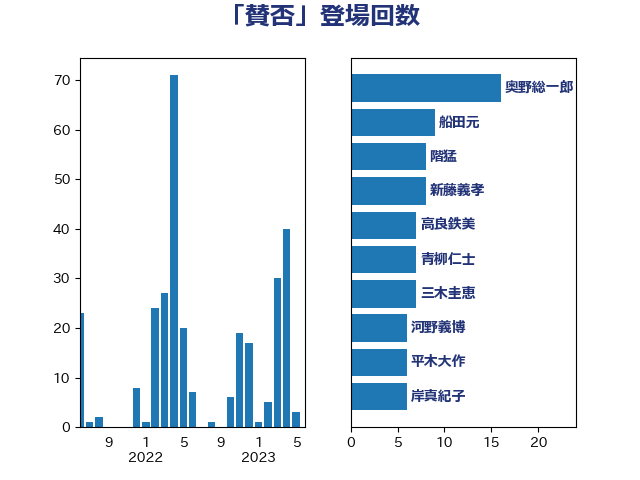

単語「賛否」

| 奥野総一郎 | 立憲民主党 | 16 回 |
| 船田元 | 自由民主党 | 9 回 |
| 階猛 | 立憲民主党 | 8 回 |
| 新藤義孝 | 自由民主党 | 8 回 |
| 高良鉄美 | 無所属 | 7 回 |
| 青柳仁士 | 日本維新の会 | 7 回 |
| 三木圭恵 | 日本維新の会 | 7 回 |
| 河野義博 | 公明党 | 6 回 |
| 平木大作 | 公明党 | 6 回 |
| 岸真紀子 | 立憲民主党 | 6 回 |
| 馬場成志 | 自由民主党 | 5 回 |
| 山田宏 | 自由民主党 | 5 回 |
| 山井和則 | 立憲民主党 | 5 回 |
| 西村智奈美 | 立憲民主党 | 4 回 |
| 森屋宏 | 自由民主党 | 4 回 |
| 杉久武 | 公明党 | 4 回 |
| 大石あきこ | れいわ新選組 | 4 回 |
| 古賀友一郎 | 自由民主党 | 4 回 |
| 古川禎久 | 自由民主党 | 4 回 |
| 鶴保庸介 | 自由民主党 | 3 回 |
| 阿達雅志 | 自由民主党 | 3 回 |
| 野田聖子 | 自由民主党 | 3 回 |
| 足立康史 | 日本維新の会 | 3 回 |
| 谷田川元 | 立憲民主党 | 3 回 |
| 石橋通宏 | 立憲民主党 | 3 回 |
| 矢倉克夫 | 公明党 | 3 回 |
| 渡辺周 | 立憲民主党 | 3 回 |
| 山本順三 | 自由民主党 | 3 回 |
| 山岡達丸 | 立憲民主党 | 3 回 |
| 山下貴司 | 自由民主党 | 3 回 |
| 小川淳也 | 立憲民主党 | 3 回 |
| 吉川沙織 | 立憲民主党 | 3 回 |
| 北神圭朗 | 無所属 | 3 回 |
| 伊藤孝恵 | 国民民主党 | 3 回 |
| 中川正春 | 立憲民主党 | 3 回 |
| 高橋千鶴子 | 日本共産党 | 2 回 |
| 馬場伸幸 | 日本維新の会 | 2 回 |
| 長浜博行 | 無所属 | 2 回 |
| 酒井庸行 | 自由民主党 | 2 回 |
| 赤嶺政賢 | 日本共産党 | 2 回 |
| 豊田俊郎 | 自由民主党 | 2 回 |
| 蓮舫 | 立憲民主党 | 2 回 |
| 石垣のりこ | 立憲民主党 | 2 回 |
| 石井拓 | 自由民主党 | 2 回 |
| 玉木雄一郎 | 国民民主党 | 2 回 |
| 浜野喜史 | 国民民主党 | 2 回 |
| 松村祥史 | 自由民主党 | 2 回 |
| 末松信介 | 自由民主党 | 2 回 |
| 有村治子 | 自由民主党 | 2 回 |
| 岡本あき子 | 立憲民主党 | 2 回 |
| 塩村あやか | 立憲民主党 | 2 回 |
| 古川俊治 | 自由民主党 | 2 回 |
| 北側一雄 | 公明党 | 2 回 |
| 伊佐進一 | 公明党 | 2 回 |
| 仁木博文 | 無所属 | 2 回 |
| 中島克仁 | 立憲民主党 | 2 回 |
| 高橋克法 | 自由民主党 | 1 回 |
| 音喜多駿 | 日本維新の会 | 1 回 |
| 青島健太 | 日本維新の会 | 1 回 |
| 青山大人 | 立憲民主党 | 1 回 |
| 阿部司 | 日本維新の会 | 1 回 |
| 長谷川岳 | 自由民主党 | 1 回 |
| 長峯誠 | 自由民主党 | 1 回 |
| 野村哲郎 | 自由民主党 | 1 回 |
| 道下大樹 | 立憲民主党 | 1 回 |
| 谷川とむ | 自由民主党 | 1 回 |
| 藤田文武 | 日本維新の会 | 1 回 |
| 芳賀道也 | 国民民主党 | 1 回 |
| 舟山康江 | 国民民主党 | 1 回 |
| 篠原豪 | 立憲民主党 | 1 回 |
| 穀田恵二 | 日本共産党 | 1 回 |
| 福岡資麿 | 自由民主党 | 1 回 |
| 石井浩郎 | 自由民主党 | 1 回 |
| 田村智子 | 日本共産党 | 1 回 |
| 玄葉光一郎 | 立憲民主党 | 1 回 |
| 浜田聡 | NHK党 | 1 回 |
| 沢田良 | 日本維新の会 | 1 回 |
| 梅村みずほ | 日本維新の会 | 1 回 |
| 柴山昌彦 | 自由民主党 | 1 回 |
| 柳ヶ瀬裕文 | 日本維新の会 | 1 回 |
| 柚木道義 | 立憲民主党 | 1 回 |
| 林芳正 | 自由民主党 | 1 回 |
| 松沢成文 | 日本維新の会 | 1 回 |
| 松川るい | 自由民主党 | 1 回 |
| 杉本和巳 | 日本維新の会 | 1 回 |
| 末次精一 | 立憲民主党 | 1 回 |
| 新垣邦男 | 立憲民主党 | 1 回 |
| 斎藤嘉隆 | 立憲民主党 | 1 回 |
| 斎藤アレックス | 国民民主党 | 1 回 |
| 斉藤鉄夫 | 公明党 | 1 回 |
| 徳永エリ | 立憲民主党 | 1 回 |
| 後藤茂之 | 自由民主党 | 1 回 |
| 岩渕友 | 日本共産党 | 1 回 |
| 山際大志郎 | 自由民主党 | 1 回 |
| 山本博司 | 公明党 | 1 回 |
| 山口壯 | 自由民主党 | 1 回 |
| 山下雄平 | 自由民主党 | 1 回 |
| 山下芳生 | 日本共産党 | 1 回 |
| 小泉進次郎 | 自由民主党 | 1 回 |
| 守島正 | 日本維新の会 | 1 回 |
| 太田房江 | 自由民主党 | 1 回 |
| 大島敦 | 立憲民主党 | 1 回 |
| 大塚耕平 | 国民民主党 | 1 回 |
| 吉田とも代 | 日本維新の会 | 1 回 |
| 古屋圭司 | 自由民主党 | 1 回 |
| 務台俊介 | 自由民主党 | 1 回 |
| 前原誠司 | 国民民主党 | 1 回 |
| 伊波洋一 | 無所属 | 1 回 |
| 伊東良孝 | 自由民主党 | 1 回 |
| 丹羽秀樹 | 自由民主党 | 1 回 |
| 丸川珠代 | 自由民主党 | 1 回 |
| 中司宏 | 日本維新の会 | 1 回 |
| 上川陽子 | 自由民主党 | 1 回 |